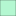

<!doctype html>
<html lang="en">
    <head>
        <meta charset="utf-8">
        <meta http-equiv="X-UA-Compatible" content="IE=edge">
        <meta name="viewport" content="initial-scale=1,user-scalable=no,maximum-scale=1,width=device-width">
        <meta name="mobile-web-app-capable" content="yes">
        <meta name="apple-mobile-web-app-capable" content="yes">
        <link rel="stylesheet" href="css/leaflet.css"><link rel="stylesheet" href="css/L.Control.Locate.min.css">
        <link rel="stylesheet" href="css/qgis2web.css"><link rel="stylesheet" href="css/fontawesome-all.min.css">
        <link rel="stylesheet" href="css/leaflet-search.css">
        <link rel="stylesheet" href="css/leaflet-control-geocoder.Geocoder.css">
        <style>
        html, body, #map {
            width: 100%;
            height: 100%;
            padding: 0;
            margin: 0;
        }
        </style>
        <title></title>
    </head>
    <body>
        <div id="map">
        </div>
        <script src="js/qgis2web_expressions.js"></script>
        <script src="js/leaflet.js"></script><script src="js/L.Control.Locate.min.js"></script>
        <script src="js/leaflet.rotatedMarker.js"></script>
        <script src="js/leaflet.pattern.js"></script>
        <script src="js/leaflet-hash.js"></script>
        <script src="js/Autolinker.min.js"></script>
        <script src="js/rbush.min.js"></script>
        <script src="js/labelgun.min.js"></script>
        <script src="js/labels.js"></script>
        <script src="js/leaflet-control-geocoder.Geocoder.js"></script>
        <script src="js/leaflet-search.js"></script>
        <script src="data/Limitenacional_1.js"></script>
        <script src="data/reasprotegidasdeBolivia_2.js"></script>
        <script src="data/reasprotegidasenprocesodecreacion_3.js"></script>
        <script src="data/reasprotegidasdesarrolladasporFNB_4.js"></script>
        <script>
        var map = L.map('map', {
            zoomControl:true, maxZoom:28, minZoom:1
        }).fitBounds([[-23.22459692648571,-77.95918328012449],[-9.328710870736897,-49.1404962845356]]);
        var hash = new L.Hash(map);
        map.attributionControl.setPrefix('<a href="https://github.com/tomchadwin/qgis2web" target="_blank">qgis2web</a> &middot; <a href="https://leafletjs.com" title="A JS library for interactive maps">Leaflet</a> &middot; <a href="https://qgis.org">QGIS</a>');
        var autolinker = new Autolinker({truncate: {length: 30, location: 'smart'}});
        function removeEmptyRowsFromPopupContent(content, feature) {
         var tempDiv = document.createElement('div');
         tempDiv.innerHTML = content;
         var rows = tempDiv.querySelectorAll('tr');
         for (var i = 0; i < rows.length; i++) {
             var td = rows[i].querySelector('td.visible-with-data');
             var key = td ? td.id : '';
             if (td && td.classList.contains('visible-with-data') && feature.properties[key] == null) {
                 rows[i].parentNode.removeChild(rows[i]);
             }
         }
         return tempDiv.innerHTML;
        }
        document.querySelector(".leaflet-popup-pane").addEventListener("load", function(event) {
          var tagName = event.target.tagName,
            popup = map._popup;
          // Also check if flag is already set.
          if (tagName === "IMG" && popup && !popup._updated) {
            popup._updated = true; // Set flag to prevent looping.
            popup.update();
          }
        }, true);
        L.control.locate({locateOptions: {maxZoom: 19}}).addTo(map);
        var bounds_group = new L.featureGroup([]);
        function setBounds() {
        }
        map.createPane('pane_OpenStreetMap_0');
        map.getPane('pane_OpenStreetMap_0').style.zIndex = 400;
        var layer_OpenStreetMap_0 = L.tileLayer('http://tile.openstreetmap.org/{z}/{x}/{y}.png', {
            pane: 'pane_OpenStreetMap_0',
            opacity: 1.0,
            attribution: '',
            minZoom: 1,
            maxZoom: 28,
            minNativeZoom: 0,
            maxNativeZoom: 18
        });
        layer_OpenStreetMap_0;
        map.addLayer(layer_OpenStreetMap_0);
        function pop_Limitenacional_1(feature, layer) {
            var popupContent = '<table>\
                    <tr>\
                        <th scope="row">Pais</th>\
                        <td>' + (feature.properties['Pais'] !== null ? autolinker.link(feature.properties['Pais'].toLocaleString()) : '') + '</td>\
                    </tr>\
                </table>';
            layer.bindPopup(popupContent, {maxHeight: 400});
            var popup = layer.getPopup();
            var content = popup.getContent();
            var updatedContent = removeEmptyRowsFromPopupContent(content, feature);
            popup.setContent(updatedContent);
        }

        function style_Limitenacional_1_0() {
            return {
                pane: 'pane_Limitenacional_1',
                opacity: 1,
                color: 'rgba(35,35,35,1.0)',
                dashArray: '',
                lineCap: 'butt',
                lineJoin: 'miter',
                weight: 2.0, 
                fill: true,
                fillOpacity: 1,
                fillColor: 'rgba(125,139,143,0.0)',
                interactive: true,
            }
        }
        map.createPane('pane_Limitenacional_1');
        map.getPane('pane_Limitenacional_1').style.zIndex = 401;
        map.getPane('pane_Limitenacional_1').style['mix-blend-mode'] = 'normal';
        var layer_Limitenacional_1 = new L.geoJson(json_Limitenacional_1, {
            attribution: '',
            interactive: true,
            dataVar: 'json_Limitenacional_1',
            layerName: 'layer_Limitenacional_1',
            pane: 'pane_Limitenacional_1',
            onEachFeature: pop_Limitenacional_1,
            style: style_Limitenacional_1_0,
        });
        bounds_group.addLayer(layer_Limitenacional_1);
        map.addLayer(layer_Limitenacional_1);
        function pop_reasprotegidasdeBolivia_2(feature, layer) {
            var popupContent = '<table>\
                    <tr>\
                        <th scope="row">Nombre:</th>\
                        <td>' + (feature.properties['Nombre_'] !== null ? autolinker.link(feature.properties['Nombre_'].toLocaleString()) : '') + '</td>\
                    </tr>\
                    <tr>\
                        <th scope="row">Escala:</th>\
                        <td>' + (feature.properties['Escala_'] !== null ? autolinker.link(feature.properties['Escala_'].toLocaleString()) : '') + '</td>\
                    </tr>\
                    <tr>\
                        <th scope="row">Designación:</th>\
                        <td>' + (feature.properties['Designaci�'] !== null ? autolinker.link(feature.properties['Designaci�'].toLocaleString()) : '') + '</td>\
                    </tr>\
                    <tr>\
                        <th scope="row">Superficie:</th>\
                        <td>' + (feature.properties['Superficie'] !== null ? autolinker.link(feature.properties['Superficie'].toLocaleString()) : '') + '</td>\
                    </tr>\
                </table>';
            layer.bindPopup(popupContent, {maxHeight: 400});
            var popup = layer.getPopup();
            var content = popup.getContent();
            var updatedContent = removeEmptyRowsFromPopupContent(content, feature);
            popup.setContent(updatedContent);
        }

        function style_reasprotegidasdeBolivia_2_0(feature) {
            switch(String(feature.properties['Designaci�'])) {
                case 'Nacional':
                    return {
                pane: 'pane_reasprotegidasdeBolivia_2',
                opacity: 1,
                color: 'rgba(35,35,35,1.0)',
                dashArray: '',
                lineCap: 'butt',
                lineJoin: 'miter',
                weight: 1, 
                fill: true,
                fillOpacity: 1,
                fillColor: 'rgba(72,152,120,1.0)',
                interactive: true,
            }
                    break;
                case 'Subnacional':
                    return {
                pane: 'pane_reasprotegidasdeBolivia_2',
                opacity: 1,
                color: 'rgba(35,35,35,1.0)',
                dashArray: '',
                lineCap: 'butt',
                lineJoin: 'miter',
                weight: 1, 
                fill: true,
                fillOpacity: 1,
                fillColor: 'rgba(180,247,209,1.0)',
                interactive: true,
            }
                    break;
            }
        }
        map.createPane('pane_reasprotegidasdeBolivia_2');
        map.getPane('pane_reasprotegidasdeBolivia_2').style.zIndex = 402;
        map.getPane('pane_reasprotegidasdeBolivia_2').style['mix-blend-mode'] = 'normal';
        var layer_reasprotegidasdeBolivia_2 = new L.geoJson(json_reasprotegidasdeBolivia_2, {
            attribution: '',
            interactive: true,
            dataVar: 'json_reasprotegidasdeBolivia_2',
            layerName: 'layer_reasprotegidasdeBolivia_2',
            pane: 'pane_reasprotegidasdeBolivia_2',
            onEachFeature: pop_reasprotegidasdeBolivia_2,
            style: style_reasprotegidasdeBolivia_2_0,
        });
        bounds_group.addLayer(layer_reasprotegidasdeBolivia_2);
        map.addLayer(layer_reasprotegidasdeBolivia_2);
        function pop_reasprotegidasenprocesodecreacion_3(feature, layer) {
            var popupContent = '<table>\
                    <tr>\
                        <th scope="row">SUP_CC</th>\
                        <td>' + (feature.properties['SUP_CC'] !== null ? autolinker.link(feature.properties['SUP_CC'].toLocaleString()) : '') + '</td>\
                    </tr>\
                    <tr>\
                        <th scope="row">Nombre:</th>\
                        <td>' + (feature.properties['Nombre'] !== null ? autolinker.link(feature.properties['Nombre'].toLocaleString()) : '') + '</td>\
                    </tr>\
                    <tr>\
                        <th scope="row">Ecorregión:</th>\
                        <td>' + (feature.properties['Ecorregió'] !== null ? autolinker.link(feature.properties['Ecorregió'].toLocaleString()) : '') + '</td>\
                    </tr>\
                    <tr>\
                        <th scope="row">Superficie:</th>\
                        <td>' + (feature.properties['Superficie'] !== null ? autolinker.link(feature.properties['Superficie'].toLocaleString()) : '') + '</td>\
                    </tr>\
                </table>';
            layer.bindPopup(popupContent, {maxHeight: 400});
            var popup = layer.getPopup();
            var content = popup.getContent();
            var updatedContent = removeEmptyRowsFromPopupContent(content, feature);
            popup.setContent(updatedContent);
        }

        function style_reasprotegidasenprocesodecreacion_3_0() {
            return {
                pane: 'pane_reasprotegidasenprocesodecreacion_3',
                opacity: 1,
                color: 'rgba(122,59,121,1.0)',
                dashArray: '',
                lineCap: 'butt',
                lineJoin: 'miter',
                weight: 1.0, 
                fill: true,
                fillOpacity: 1,
                fillColor: 'rgba(217,94,178,1.0)',
                interactive: true,
            }
        }
        map.createPane('pane_reasprotegidasenprocesodecreacion_3');
        map.getPane('pane_reasprotegidasenprocesodecreacion_3').style.zIndex = 403;
        map.getPane('pane_reasprotegidasenprocesodecreacion_3').style['mix-blend-mode'] = 'normal';
        var layer_reasprotegidasenprocesodecreacion_3 = new L.geoJson(json_reasprotegidasenprocesodecreacion_3, {
            attribution: '',
            interactive: true,
            dataVar: 'json_reasprotegidasenprocesodecreacion_3',
            layerName: 'layer_reasprotegidasenprocesodecreacion_3',
            pane: 'pane_reasprotegidasenprocesodecreacion_3',
            onEachFeature: pop_reasprotegidasenprocesodecreacion_3,
            style: style_reasprotegidasenprocesodecreacion_3_0,
        });
        bounds_group.addLayer(layer_reasprotegidasenprocesodecreacion_3);
        map.addLayer(layer_reasprotegidasenprocesodecreacion_3);
        function pop_reasprotegidasdesarrolladasporFNB_4(feature, layer) {
            var popupContent = '<table>\
                    <tr>\
                        <th scope="row">Nombre completo:</th>\
                        <td>' + (feature.properties['Nombre com'] !== null ? autolinker.link(feature.properties['Nombre com'].toLocaleString()) : '') + '</td>\
                    </tr>\
                    <tr>\
                        <th scope="row">Nombre corto:</th>\
                        <td>' + (feature.properties['Nombre cor'] !== null ? autolinker.link(feature.properties['Nombre cor'].toLocaleString()) : '') + '</td>\
                    </tr>\
                    <tr>\
                        <th scope="row">Clasificación:</th>\
                        <td>' + (feature.properties['Clasificac'] !== null ? autolinker.link(feature.properties['Clasificac'].toLocaleString()) : '') + '</td>\
                    </tr>\
                    <tr>\
                        <th scope="row">Escala:</th>\
                        <td>' + (feature.properties['Escala_'] !== null ? autolinker.link(feature.properties['Escala_'].toLocaleString()) : '') + '</td>\
                    </tr>\
                    <tr>\
                        <th scope="row">Año de creación:</th>\
                        <td>' + (feature.properties['Año de cr'] !== null ? autolinker.link(feature.properties['Año de cr'].toLocaleString()) : '') + '</td>\
                    </tr>\
                    <tr>\
                        <th scope="row">Superficie:</th>\
                        <td>' + (feature.properties['Superficie'] !== null ? autolinker.link(feature.properties['Superficie'].toLocaleString()) : '') + '</td>\
                    </tr>\
                    <tr>\
                        <th scope="row">Objetivo de creación:</th>\
                        <td>' + (feature.properties['Objeto de'] !== null ? autolinker.link(feature.properties['Objeto de'].toLocaleString()) : '') + '</td>\
                    </tr>\
                    <tr>\
                        <th scope="row">Ley de creación:</th>\
                        <td>' + (feature.properties['Ley de cre'] !== null ? autolinker.link(feature.properties['Ley de cre'].toLocaleString()) : '') + '</td>\
                    </tr>\
                    <tr>\
                        <th scope="row">Municipio:</th>\
                        <td>' + (feature.properties['Municipio_'] !== null ? autolinker.link(feature.properties['Municipio_'].toLocaleString()) : '') + '</td>\
                    </tr>\
                    <tr>\
                        <th scope="row">Departamento:</th>\
                        <td>' + (feature.properties['Departamen'] !== null ? autolinker.link(feature.properties['Departamen'].toLocaleString()) : '') + '</td>\
                    </tr>\
                </table>';
            layer.bindPopup(popupContent, {maxHeight: 400});
            var popup = layer.getPopup();
            var content = popup.getContent();
            var updatedContent = removeEmptyRowsFromPopupContent(content, feature);
            popup.setContent(updatedContent);
        }

        function style_reasprotegidasdesarrolladasporFNB_4_0() {
            return {
                pane: 'pane_reasprotegidasdesarrolladasporFNB_4',
                opacity: 1,
                color: 'rgba(255,135,37,1.0)',
                dashArray: '',
                lineCap: 'butt',
                lineJoin: 'miter',
                weight: 2.0, 
                fill: true,
                fillOpacity: 1,
                fillColor: 'rgba(255,188,95,1.0)',
                interactive: true,
            }
        }
        map.createPane('pane_reasprotegidasdesarrolladasporFNB_4');
        map.getPane('pane_reasprotegidasdesarrolladasporFNB_4').style.zIndex = 404;
        map.getPane('pane_reasprotegidasdesarrolladasporFNB_4').style['mix-blend-mode'] = 'normal';
        var layer_reasprotegidasdesarrolladasporFNB_4 = new L.geoJson(json_reasprotegidasdesarrolladasporFNB_4, {
            attribution: '',
            interactive: true,
            dataVar: 'json_reasprotegidasdesarrolladasporFNB_4',
            layerName: 'layer_reasprotegidasdesarrolladasporFNB_4',
            pane: 'pane_reasprotegidasdesarrolladasporFNB_4',
            onEachFeature: pop_reasprotegidasdesarrolladasporFNB_4,
            style: style_reasprotegidasdesarrolladasporFNB_4_0,
        });
        bounds_group.addLayer(layer_reasprotegidasdesarrolladasporFNB_4);
        map.addLayer(layer_reasprotegidasdesarrolladasporFNB_4);
        var osmGeocoder = new L.Control.Geocoder({
            collapsed: true,
            position: 'topleft',
            text: 'Search',
            title: 'Testing'
        }).addTo(map);
        document.getElementsByClassName('leaflet-control-geocoder-icon')[0]
        .className += ' fa fa-search';
        document.getElementsByClassName('leaflet-control-geocoder-icon')[0]
        .title += 'Search for a place';
        var baseMaps = {};
        L.control.layers(baseMaps,{' Áreas protegidas desarrolladas por FNB': layer_reasprotegidasdesarrolladasporFNB_4,' Áreas protegidas en proceso de creacion': layer_reasprotegidasenprocesodecreacion_3,'Áreas protegidas de Bolivia<br /><table><tr><td style="text-align: center;"></td><td>Nacional</td></tr><tr><td style="text-align: center;"></td><td>Subnacional</td></tr></table>': layer_reasprotegidasdeBolivia_2,' Limite nacional': layer_Limitenacional_1,"OpenStreetMap": layer_OpenStreetMap_0,},{collapsed:false}).addTo(map);
        setBounds();
        map.addControl(new L.Control.Search({
            layer: layer_reasprotegidasdesarrolladasporFNB_4,
            initial: false,
            hideMarkerOnCollapse: true,
            propertyName: 'Nombre cor'}));
        document.getElementsByClassName('search-button')[0].className +=
         ' fa fa-binoculars';
        </script>
    </body>
</html>
